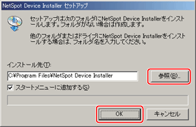

NetSpot Device Installerのインストール
NetSpot Device Installerのインストール手順を説明しています。
|
重要
|
|
インストール前に、他のアプリケーションソフトウェアをすべて終了してください。
Windows 2000/XP/Server 2003をお使いの場合、コンピューターを起動した際に、必ずAdministratorsのメンバーとしてログオンしてください。
Windowsファイアウォール機能を持っているOSをお使いで、Windowsファイアウォール機能が有効になっている場合、NetSpot Device Installerをブロック対象外のプログラムとしてファイアウォールに登録しておかなければ、IPアドレスが設定されていないプリンターの探索や、ローカルサブネット以外のネットワークに対するブロードキャスト探索／マルチキャスト探索を行うことができません。NetSpot Device Installerをファイアウォールのブロック対象外のプログラムとして登録する手順は、NetSpot Device InstallerのReadmeファイルを参照してください。
|
|
メモ
|
|
NetSpot Device Installerは、インストールせずに使用できるユーティリティーソフトウェアです。インストールせずに使用する場合は、「使用方法」を参照してください。
NetSpot Device Installer（TCP/IP版）にプラグインを追加すると、機能を拡張することができます。プラグインの機能を使用する場合は、NetSpot Device Installerとプラグインの両方をコンピューターにインストールしてください。プラグインの詳細については、NetSpot Device InstallerのReadmeを参照してください。
|
1
付属のCD-ROMをCD-ROMドライブにセットします。
CD-ROMメニュー画面が表示された場合は、［終了］をクリックします。
2
CD-ROM内の［NetSpot_Device_Installer］－［Windows］フォルダーにある［nsdisetup.exe］アイコンをダブルクリックします。
使用許諾契約書が表示されます。
NetSpot Device Installerを起動したことのあるコンピューターでは、使用許諾契約書は表示されずにNetSpot Device Installerが起動します。手順
4に進んでください。
3
使用許諾契約書の内容を確認したあと、［はい］をクリックします。
［参照］をクリックして、インストール先を選択したあと、［OK］をクリックします。

NetSpot Device Installerのインストールが始まります。
［スタートメニューに追加する］を選択すると、Windowsの［スタート］メニューにNetSpot Device Installerを追加できます。
Windowsファイアウォール機能を持っているOSをお使いの場合に、以下の画面が表示されたときは、［はい］または［いいえ］をクリックします。
［はい］をクリックすると、NetSpot Device Installerをファイアウォールに登録します。
［いいえ］をクリックすると、NetSpot Device Installerのファイアウォールへの登録は行われません。その場合は、IPアドレスが設定されていないプリンターの探索や、ローカルサブネット以外のネットワークに対するブロードキャスト探索／マルチキャスト探索を行うことができません。
5
インストール完了の画面が表示されたら、［OK］をクリックします。
プラグインのインストールプログラムが起動します。
6
インストールするプラグインを選択したあと、［インストール開始］をクリックします。
プラグインの詳細については、NetSpot Device InstallerのReadmeを参照してください。
プラグインは、あとでインストールすることもできます。あとからプラグインをインストールする手順については、Readmeを参照してください。
以上でインストールの作業が終了しました。